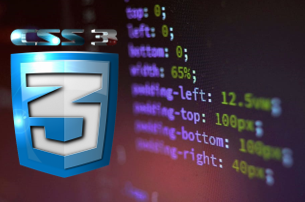
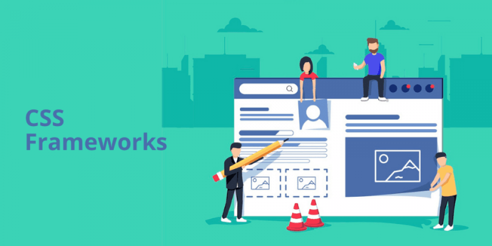

PROPÓSITO DEL SITIO
El propósito de este sitio es elaborar un recurso educativo digital para dinamizar las estrategias del aprendizaje; una estrategia la constituyen los objetos virtuales de aprendizaje. Dichos objetos son recursos desarrollados por empresas que diseñan contenidos multimedias e interactivos, basados en HTML5 y CSS3, entre otras tecnologías.
En este caso, se presentarán los temas "Hojas de Estilo en Cascada CSS" y "Frameworks CSS", los cuales son temáticas de importancia fundamental en el desarrollo del curso Diseño de Sitios Web, con el conocimiento adquirido sobre estas dos temáticas se podrá avanzar en el camino de la programación HTML y en general todo lo concerniente a los sitios web creados a través de este.
HOJAS DE ESTILO EN CASCADA CSS

Hoja de Estilo en Cascada o sus siglas CSS (en inglés Cascading Style Sheets) es un estándar creado especialmente para separar los atributos visuales de presentación tales como el color de la letra, el fondo, tamaño de letra, fuente, etc.; básicamente es el lenguaje que permite describir la presentación realizada en HTML o XML principalmente, ya que, a pesar de que puede trabajar con muchos documentos, su principal uso es para otorgar la información sobre la presentación de páginas web.
La separación entre contenido y presentación hace mucho más fácil el manejo del trabajo en general e incluso se pueden realizar un conjunto de estilos específicos que se pueden reutilizar en varias presentaciones; con lo anterior se reduce mucho el tiempo de trabajo.
Referencias bibliográficas:
CSS Tutoriales. Developer.mozilla.org. (2021). Recuperado de http://developer.mozilla.org/es/docs/Web/CSS
León, D. Hojas de estilo en cascada (CSS). Htmlquick.com. Recuperado de https://www.htmlquick.com/es/tutorials/css.html
FRAMEWORKS CSS

Un Frameworks de CSS es una biblioteca de estilos genéricos que se puede usar para implementar diseños web. Tiene en cuenta ciertas utilidades que pueden aprovecharse frecuentemente en el diseño web. Una de las ventajas más importantes de un Frameworks bien diseñado e implementado, es que asegura que va a funcionar en una gran variedad de navegadores y también aporta cierto grado de fiabilidad e eficacia ya que se supone que está muy probado para garantizar que no hay errores.
Sin embargo, a pesar de tener muchas ventajas, una de las desventajas más notorias es la implementación de un Frameworks que no es necesario o correcto, lo que podría agregar una gran cantidad de ancho de banda y tiempo de carga innecesarios con elementos que no aportan nada al sitio y que no debería tener. Los Frameworks CSS se clasifican en dos tipos según el uso para el cual estén destinados: Multipropósito y Propósito específico.
Referencias bibliográficas del tema:
codigofacilito. (2018). ¿Qué es un Framework CSS? [Video]. Recuperado de https://www.youtube.com/watch?v=I_-H72yY0ZQ
Framework de CSS. Es.wikipedia.org. (2020). Recuperado de https://es.wikipedia.org/wiki/Framework_de_CSS